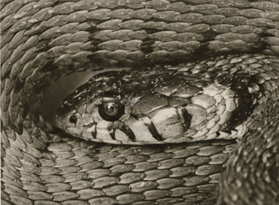
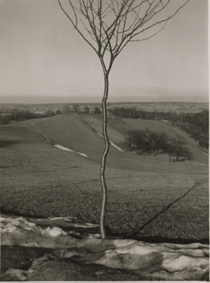
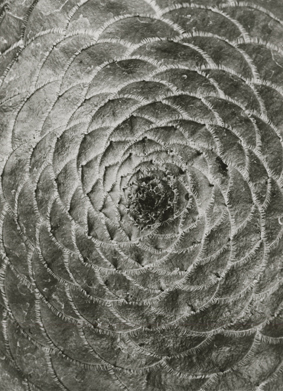

| |
The
Sublime Vision: Romanticism in the Photography of Albert Renger-Patzsch
Jenny McComas
In Weimar Germany, the camera was a powerful symbol of modernity.
Photographers at the Bauhaus, influenced by Soviet Constructivism,
celebrated technology and the modern city in their work;[1]
their efforts have helped create the notion of a predominantly
urban and industrially oriented Weimar culture. Nevertheless,
in reality, a strong dichotomy between city and country characterized
Germany in the 1920s, and Romanticism remained a pervasive,
though subtle, force in German art. For German artists living
in the post-World War I era, struggling to come to terms with
the war’s mass death and destruction and adapting to an
increasingly industrialized society, the idealism of Romanticism
was attractive. Photographs of plants and nature from the Weimar
years seem to reflect this lingering undercurrent of Romanticism.
Plants are not inherently urbane or modern, and their organicism
seems at odds with technological modernity. Nevertheless, images
of plants and nature figure prominently in the work of several
important German photographers of the twenties. Karl Blossfeldt’s
elegant images of magnified flowers remain popular to this day,
but the nature photography of Albert Renger-Patzsch, less well
known in the United States, also merits close study. Throughout
his career, Renger-Patzsch demonstrated a strong interest in
nature. In the 1920s, he published two books devoted to nature
photography—Orchideen and Crassula—as part of the
Folkwang Publishing House’s series Die Welt der Pflanze
(The World of Plants), and articulated his thoughts on the topic
in a 1924 essay, Photografieren von Blüten (Flower Photography).[2]
Despite his adherence to a modernist formal language—his
almost fetishistic attention to objects and surfaces immediately
brings the work of Edward Weston to mind—his images, as
will be suggested in this article, are firmly rooted in the
tradition of German Romanticism. In particular, his work, like
that of his nineteenth-century Romantic predecessors, conveys
the Kantian concept of the Sublime.
Albert Renger-Patzsch’s object-oriented work shares
affinities with the Neue Sachlichkeit (New Objectivity or New
Sobriety) style of realist painting that arose in Weimar Germany
as a reaction against the spiritual and anti-bourgeois tendencies
of pre-war Expressionism.[3] Although the term Neue Sachlichkeit
is applied to an exceptionally diverse and geographically dispersed
group of artists, Neue Sachlichkeit paintings, in general, are
crisply focused, highly detailed, and often emotionally detached.
Rarely, however, was Neue Sachlichkeit art purely naturalistic
or objective; indeed, it is sometimes characterized as “magical
realism,” a term that acknowledges the Romantic content
apparent in some of the imagery. Though photography was touted
as objective, photographers achieved visions of a “magical”
or slightly off-kilter world through the employment of extreme
angles, close-ups, tight cropping, and sharp focus.[4] In Albert
Renger-Patzsch’s book of photographs Die Welt ist schön
(The World is Beautiful), published in 1928, images of plants
and panoramic landscapes appear alongside images of factories
and machines. Taken in the Ruhr district, Germany’s most
industrialized region at the time, the photographs decontextualize
their subjects by emphasizing the shapes, surfaces, and formal
similarities of disparate objects.[5] But although the region
where Renger-Patzsch lived was home to heavy industry, the book
by no means privileged industry over nature. Indeed, nature
and industry appear opposed to each other in Renger-Patzsch’s
photographs of the landscape and towns of the Ruhr district,
some of which appeared in Die Welt ist schön. Far from
presenting a “beautiful world,” these images depict
the devastation of a once pristine agricultural environment
by the factories and smokestacks looming on the horizon. These
landscapes do not suggest the excitement of the Sublime, but
rather, bring to the fore the old Romantic notion of the antagonism
between city and countryside, particularly through their juxtaposition
with the aesthetically enticing images of nature found elsewhere
in the book.[6] And although Renger-Patzsch relied on a modernist
formal language in his depictions of nature, his photographs
of archetypal plants glorify nature in a way that recalls nineteenth-century
Romantic paintings, in which artists infused the landscape with
a sense of divinity. Caspar David Friedrich’s Cross in
the Mountains of 1807-08 is a classic example.
As demonstrated by Robert Rosenblum in his pioneering study,
Modern Painting and the Northern Romantic Tradition: Friedrich
to Rothko, Romanticism did not only capture the imagination
of artists throughout Germany in the early nineteenth century,
but persisted well into the twentieth century. The depiction
of nature took on prime importance within the Romantic movement,
becoming a surrogate for traditional Christian symbolism for
artists disenchanted with the seemingly hollow rituals of the
Church.[7] Early nineteenth-century Romantic painters, such
as Caspar David Friedrich and Philippe Otto Runge, endowed nature
with transcendental and divine qualities in their work. As a
German artist employed in the art academy of Essen, Renger-Patzsch
would have found it difficult to escape the legacy of Friedrich,
Runge, and the scores of Symbolist and Expressionist artists
who followed in the footsteps of the Romantics.
Romantic artists wishing to express a sense of divinity within
nature, and needing intellectual guidance, had turned to Edmund
Burke’s influential treatise of 1756, Philosophical Enquiry
into the Origins of Our Ideas of the Sublime and the Beautiful
or the philosopher Immanuel Kant’s Observations on the
Feeling of the Beautiful and the Sublime of 1764 and Critique
or Judgment of 1790. Collectively, these works emphasize the
idea that a sublime landscape is one that inspires terror or
awe—and simultaneous delight—through its sheer immensity
and power.[8] For artists and philosophers of the pre-industrial
Romantic age in Germany, natural phenomena such as waterfalls,
gorges, and mountains became emblematic of the vastness and
awesomeness of the Sublime. The experience of the Sublime was
perceived of as a strongly emotional, or even religious, experience
that could remind humans of their inconsequentiality in the
face of nature’s power. Due to the pervasiveness of Romantic
thought, this “cult of nature” was well established
in Germany by the 1920s. Idealization of nature provided a foil
to the urban utopia promised by modern technology and entertainment.
During the Romantic era, the notion of spiritual communion with
nature became a theme in painting, often through the use of
the Sublime aesthetic. Later nineteenth-century social movements,
such as nudism and vegetarianism, the youth movement,[9] and
the development of garden suburbs, reinforced the notion that
a life lived in close contact with nature was both physically
and morally healthy. Indeed, the emphasis on industry and urbanism
in Weimar culture can be misleading, as the majority of the
population continued to reside in small towns and rural villages
during the 1920s.[10] Nevertheless, industry and the metropolis
were fast encroaching upon rural villages, as can be seen in
Renger-Patzsch’s photographs of the Ruhr district. The
reality of industrial development made his nature photography
appear all the more sublime and fantastic.
Writings by Burke and Kant, though obviously important for
the development of Romantic aesthetics, were products of the
Enlightenment. As such, they stress humanity’s psychological
need to control the unknown and to devise rational ways of understanding
the incomprehensibility of the Sublime. Edmund Burke, for example,
argued that the Sublime was best contemplated from a distance.
One could safely meditate upon the enormity of nature when it
was presented in the form of a painting. The viewer could mentally
enter the space of the painting and contemplate sublime nature
while physically removed from it.[11] Regarding our reactions
to the Sublime, Kant explained that when confronted with a sense
of incomprehensible enormity or microscopic smallness, the viewer
summons his or her mental powers of reason to rationalize and
comprehend the previously unimaginable image or concept.[12]
To facilitate the viewer’s comprehension of and delight
in a sublime landscape, artists could impose a geometric order
or other organizational structure—through perspective
or other formal means—on the composition. The ability
to suggest the irrationality of the world, while clearly controlling
or domesticating it through visual means, would have continued
to appeal to artists working within the sober, serious framework
of Neue Sachlichkeit in the 1920s.
Renger-Patzsch’s close-up photographs of nature exemplify
the concept of the Sublime and our control of it through formal
artistic means. He routinely puts the viewer face to face with
defamiliarized, and even terrifying, images of nature. One such
example, Natternkopf (Snake’s Head) of 1925 (fig. 1),
is a photograph that evokes the Sublime within a modernist formal
context. The snake is an archetypal emblem of danger, and the
extreme close-up employed by Renger-Patzsch magnifies the sense
of horror and danger as the viewer is directly confronted with
the enlarged eye of the snake. Yet, through careful composition
and close cropping, Renger-Patzsch simultaneously succeeds in
transforming the snake’s coiled body into a geometric
structure of concentric patterns; as the viewer becomes absorbed
in the complex design created by the snake’s scales, the
reptilian eye in the center of the image becomes less threatening.
The snake seems simultaneously larger than life and under our
control, as we mentally come to terms with the form of the image.
Indeed, as Kari Elise Lokke suggests in her study of Kantian
aesthetics, “it is possible to be impelled to an awareness
of one’s superiority to physical nature, and to awaken
to the sublimity of the human mind which is, according to Kant,
beyond the sphere of nature.”[13]
|  |
| |
| Fig. 1. Albert Renger-Patzsch, Natternkopf
(Snake’s Head), 1925, Gelatin silver print. ©
Albert Renger-Patzsch Archiv / Ann u. Jürgen Wilde,
Zülpich / Artists Rights Society (ARS), New York. Photo
courtesy of Kicken Berlin. |
For the Romantics, scrutiny of nature from a scientific angle
was another method of visually exerting control over the potential
chaos of the Sublime landscape. Romantic painters expressed
a great interest in depicting nature faithfully and with scientific
clarity. Indeed, Goethe considered scientific accuracy the key
to the success of a landscape painting.[14] Yet in the work
of artists like Runge and Friedrich, hyper-realistic, scientific
rendering was nearly always a means of elevating nature to a
mythical or larger-than-life status. For the German Romantics
of the early nineteenth century, science had not yet acquired
negative connotations based on its association with the dehumanizing
effects of industry and the mechanization of society. Science
was considered a humanistic endeavor, compatible with Romantic
ideals in the early nineteenth century. The pursuit of knowledge
for its own sake was valued, and science was seen as a useful
aid to aesthetics. Photographers in the 1920s, of course, had
witnessed how industry made possible the mechanized slaughter
of World War I. Renger-Patzsch’s defamiliarized images
of nature may well have functioned on one level as an attempt
to reinvest the world with a sense of magical innocence.
|  |
|
Fig. 2. Albert Renger-Patzsch,
Das Bäumchen (The Little Tree), 1929, Gelatin
silver print. © Albert Renger-Patzsch Archiv / Ann
u. Jürgen Wilde, Zülpich / Artists Rights Society
(ARS), New York. Photo courtesy of Kicken Berlin. |
Trees took on great importance for Romantic artists, who presented
them with scientific precision but also almost anthropomorphically,
transforming them into expressive archetypes of nature. Like
Snake’s Head, Renger-Patzsch’s photography of trees
evokes the Sublime, partly through their compositional similarities
to specific Romantic paintings. Das Bäumchen (The Little
Tree) of 1929 (fig. 2) bears an unmistakable resemblance to
Friedrich’s Der einsame Baum (The Lone Tree) of 1822,
now in Schloß Charlottenburg in Berlin. Both the painting
and the photograph present a single tree in the foreground,
centered in the composition, clearly delineated, and sharply
focused. Beyond each tree lies a vast landscape that stretches
into the far distance, suggesting the sublimity of infinite
space. Yet, in each image, our eye is continually drawn back
to the foreground tree, which acts an as anchor in each composition
so we are not overwhelmed by the vast landscape. Renger-Patzsch
also photographed in the woods; in contrast to images such as
The Little Tree, these photographs are small windows into hidden,
enclosed spaces of dense vegetation. The evocative Woods in
November of 1934 shows a cluster of silhouetted trees emerging
from the leaf-carpeted forest floor. It is a scene of silence
and mystery, removed from the realm of historical time. Its
mood is similar to the gloomy, meditative atmosphere of works
such as Friedrich’s The Abbey in the Oak Forest of 1810,
a mysterious image in which bare trees frame a Gothic ruin.
Both images fade into the mist, which veils the forest, allowing
us to imagine it as endless and timeless. The romanticization
of nature in Renger-Patzsch’s photographs, and his frequent
emphasis on small fragments of nature, was described in the
critic Carl Georg Heise’s 1928 preface to Die Welt ist
schön. Heise explained that:
A close-up of a single tree can…conjure up the same
intensive atmosphere of sylvan nature as the picture of densely
packed trunks. The fact that a fragment can symbolize the
whole, and that enjoyment and empathy are mutually exalting
when the imagination is forced to collaborate in the experience—this
is an area in which landscape photography offers a multitude
of possibilities…These are pictures of the life of the
earth in the sense of Caspar David Friedrich.[15]
Thus, while the endless and the enormous reside at one end
of the spectrum of the Sublime, microscopic smallness lies at
the other. Highly detailed, quasi-scientific images of individual
plants suggest this concept of incomprehensible minuteness.
Romantic painters, in their careful renderings of plants, display
empirical post-Enlightenment sensibilities, while also paying
homage to their indigenous artistic heritage. German Romanticism
revered the medieval and Renaissance culture of the Holy Roman
Empire, and for Romantic artists, Albrecht Dürer and the
landscapes by the sixteenth-century Danube School artists, such
as Albrecht Altdorfer, had assumed an iconic status. Dürer’s
carefully observed, magnified, and hyper-realistic studies of
fragments of nature, such as the famous Great Piece of Turf
of 1503, may have provided Romantic artists with inspiration
in their quest to endow nature with spiritual vitality through
faithful, scientific observation. For photographers, the view
of the world through the camera lens illuminated details of
nature that were inaccessible to the naked eye, yet they too
drew on the model provided by Dürer. Renger-Patzsch made
this clear in his 1925 essay Heretical Thoughts on Artistic
Photography. He also expressed his preference for concentrating
on small details of nature in this essay:
Dürer’s watercolour of a stag-beetle will always
send art lovers into raptures. Therefore we need not be so
timid in our choice of subjects, but how we reproduce it is
what matters. A tuft of grass or the rosette of the greater
plantain family is just as interesting to me as the fantastic
forms of the dwarf fir…The high verticals of conifers
yield images, just as do the wonderfully branch-like structures
of tree moss, which I can also depict.[16]
His obsession with these small fragments of nature was clearly
articulated the previous year, in his essay, Photografieren
von Blüten, in which Renger-Patzsch noted that to photograph
plants and flowers, “one is forced to look, as it were,
with the eyes of insects” in order to discover a microscopic
world of “fantastic beauty.”[17]
|  |
|
Fig. 3. Albert Renger-Patzsch,
Sempervivum Tabulaeforme, 1922, Gelatin silver
print. © Albert Renger-Patzsch Archiv / Ann u. Jürgen
Wilde, Zülpich / Artists Rights Society (ARS), New
York. Photo courtesy of the National Gallery of Canada /
Kicken Berlin. |
Trained as a chemist, a “scientific” approach to
the depiction of nature appealed to Renger-Patzsch. In his photographs,
plants are often—as in Dürer’s studies—removed
from their botanical context and set against a blank background,
which both decontextualizes and aestheticizes them. Besides
isolating the plants in this fashion, Renger-Patzsch severely
cropped the images and used a sharp focus to illuminate the
shape, textures, and patterned surfaces of the flowers with
extraordinary clarity. In many examples, such as Sempervivum
Tabulaeforme of 1922 (fig. 3), Renger-Patzsch employs such extreme
enlarging and cropping that no background is visible at all.
Instead, the surface of the flower fills the entire composition.
Lacking context, the magnified image of the flower can initially
disorient the viewer. The plant is defamiliarized and abstracted
to the point where it is almost unrecognizable as a flower.
Indeed, the patterning on its surface bears a distinct resemblance
to the scales of the snake in Snake’s Head (fig. 1). This
formalist, decontextualizing, aesthetic approach—characterized
by the visual comparison of two disparate objects—exemplifies
what Renger-Patzsch referred to as “joy before the object,”
and also transports these images to the realm of the Sublime.
The extreme enlargement of minute details of flowers, animals,
and landscapes transcends the boundaries of easily observable
reality in Renger-Patzsch’s images, forcing the viewer
to rethink his or her visual preconceptions. These photographs
allowed people to see fragments of nature that they could never
have seen without the aid of modern technology. Within this
modernist context, the camera became a tool for illustrating
the Romantic notion of the Sublime. In the romantically-inclined
words of Carl Georg Heise, the photographer (i.e. Renger-Patzsch)
and his camera allowed ordinary people to “see anew the
symbolism of the fullness of life itself, inexhaustible in all
its parts.”[18] Although Renger-Patzsch may have originally
conceived of these images within the spirit of scientific observation,
they have thus become monumental archetypes of art and nature
for their viewers and commentators. Michael Jennings writes
of Renger-Patzsch’s plant photography that: “The
intensity of these images, the glorification of the individual
organic object, indeed, seems to lend to these plants a mythic
status.”[19] Indeed, these images could illustrate Goethe’s
notion of the Urpflanze, or archetypal organic prototype, from
which he thought all organic development emanated.[20] Likewise,
Romantic artists had depicted archetypal images of nature—rendered
as scientifically as possible—in order to bestow a sense
of divinity upon nature.
In the “age of mechanical reproduction,”[21] as
Walter Benjamin characterized Weimar culture, Albert Renger-Patzsch
used the camera to present images of the Sublime with a modernist
vision. The aesthetics of his Neue Sachlichkeit style were ostensibly
realist, but ultimately had their roots in Romantic nature imagery.
The Romantics, in turn, had looked to the detailed, hyper-realist
style of Albrecht Dürer and the evocatively overgrown landscapes
of the Danube School for inspiration. Photo historian Ute Eskildsen
writes that Renger-Patzsch, despite his scientific background,
described reality in metaphysical terms, “attributing
to photography an extension of our vision and understanding
because with its help we are able to perceive aspects of the
natural world which are inaccessible to the naked eye.”[22]
Photographers in the 1920s were not necessarily concerned with
providing surrogates for Christian symbolism through the veneration
of nature, but instead, wished to romanticize and venerate nature
for its own sake, and to suggest the magical and inexplicable
qualities of the natural world that had fascinated the Romantics.
Influenced by the Romantic legacy as well as modernist formalism,
Albert Renger-Patzsch turned to quasi-scientific observation—framing
his observation with the aid of the camera’s lens—to
emphasize the Sublime beauty of his subject matter.
Endnotes
1. See Abigail Solomon-Godeau’s essay, “The Armed
Vision Disarmed: Radical Formalism from Weapon to Style,”
in her book Photography at the Dock: Essays on Photographic
History, Institutions, and Practices (Minneapolis: University
of Minnesota Press, 1991): 52-84. Solomon-Godeau discusses the
appropriation of Soviet Constructivist aesthetics by Bauhaus
photographers, such as László Moholy-Nagy, who
transformed the politically charged aesthetic of the Soviets
into a formalist style that became emblematic of urban, capitalist
modernity.
2. Thomas Janzen, “Photographing the ‘Essence
of Things,’ in Albert Renger-Patzsch: Photographer of
Objectivity, Ann Wilde, Jürgen Wilde, and Thomas Weski,
eds. (Cambridge: The MIT Press, 1998): 9. Renger-Patzsch’s
career, in fact, culminated with the publication of two more
books of nature photography in 1962 and 1966: Bäume (Trees)
and Gestein (Rocks).
3. According to Jost Hermand, Neue Sachlichkeit represented
an ideological viewpoint that rejected the spiritualism and
idealism of artists and intellectuals in Wilhelmine Germany.
The rise of an objective, almost photographic realist style
in painting was, Hermand suggests, a response to the specific
political, social, and economic concerns of Weimar Germany,
a society in which middle-brow, bourgeois, consumer-oriented
culture was becoming increasingly pervasive in the mid- to late-1920s.
See: Jost Hermand, “Neue Sachlichkeit: Ideology, Lifestyle,
or Artistic Movement?” in Dancing on the Volcano: Essays
on the Culture of the Weimar Republic, Thomas W. Kniesche and
Stephen Brockmann, eds. (Columbia, SC: Camden House, 1994):
57-67. The term Neue Sachlichkeit was coined in 1925 on the
occasion of a large exhibition in Mannheim, which presented
the work of post-war German realist painters. For general sources,
see: Wieland Schmied, et al., Neue Sachlichkeit and German Realism
of the Twenties (London: Hayward Gallery and the Arts Council
of Great Britain, 1978) and Sergiusz Michalski, New Objectivity:
Painting, Graphic Art and Photography in Weimar Germany 1919–1933
(Cologne: Taschen, 1994). Neue Sachlichkeit photography was
exhibited in 1928 in Stuttgart in an exhibition entitled Film
und Foto. See: Christopher Phillips, “Resurrecting Vision:
European Photography Between the World Wars,” in The New
Vision: Photography Between the World Wars, Maria Morris Hambourg
and Christopher Phillips, eds. (New York: The Metropolitan Museum
of Art, 1989).
4. Herbert Molderings, “Urbanism and Technological Utopianism:
Thoughts on the Photography of Neue Sachlichkeit and The Bauhaus,”
in Germany: The New Photography 1927–33, David Mellor,
ed. (London: The Arts Council of Great Britain, 1978): 90. Mellor
notes that “realism” or “objectivity”
are not really appropriate terms for the photography of 1920s
Germany, with its emphasis on stylized shots taken from airplanes
and skyscrapers, and its focus on pattern and detail.
5. Many viewers admired Renger-Patzsch’s modernist-formalist
approach to his subject matter, but Die Welt ist schön
was harshly criticized by Marxist critic Walter Benjamin. Although
Benjamin attacked Renger-Patzsch’s decontextualization
of objects and aesthetic juxtaposition of unrelated images,
his criticism was largely based on the book’s title, which
he saw as reactionary. Ironically, it was Renger-Patzsch’s
publisher who had insisted upon the title, correctly believing
that it would appeal to the general consumer. Renger-Patzsch
had wanted to call the volume Die Dinge (Things), a less subjective
title. See: Ulrich Rüter, “The Reception of Albert
Renger-Patzsch’s Die Welt ist schön.” History
of Photography 21, no. 3 (Autumn 1997): 192.
6. For more information on the Ruhr landscape photographs
of the 1920s, see Janzen, 15-16.
7. Robert Rosenblum, Modern Painting and the Northern Romantic
Tradition: Friedrich to Rothko (New York: Icon Editions, 1975):
17.
8. Deniz Tekiner, Modern Art and the Romantic Vision (Lanham,
NY; Oxford: University Press of America, 2000): 11-12.
9. The Wandervogel (Wandering Birds) was part of the German
Youth Movement that arose around the turn of the twentieth century.
This Berlin-based society organized long walks in the forests
surrounding the city, to counteract the “unhealthy”
effects of urbanization.
10. Michael Jennings, “Agriculture, Industry, and the
Birth of the Photo-Essay in the Late Weimar Republic,”
October 93 (Summer 2000): 26.
11. Tekiner, 15; Kari Elise Lokke, “The Role of Sublimity
in the Development of Modernist Aesthetics,” The Journal
of Aesthetics and Art Criticism 40 (Summer 1982): 421.
12. Iain Boyd Whyte, “The Sublime,” in The Romantic
Spirit in German Art 1790–1990, Keith Hartley, ed. (London:
Thames and Hudson, 1994): 139-140.
13. Lokke, 423.
14. Timothy F. Mitchell, Art and Science in German Landscape
Painting 1770–1840 (Oxford: Clarendon Press, 1992): 32.
Mitchell argues that is was “no coincidence that the ‘Golden
Age’ of geology shared with the developments of Romantic
sensibilities the same half century—1780–1830.”
(page 2).
15. Carl Georg Heise, “Preface to Die Welt ist schön,”
(1928), reprinted in Albert Renger-Patzsch: 100 Photographs,
1928 (Cologne and Boston: Schürmann & Kicken, 1979):
11.
16. Albert Renger-Patzsch, “Heretical Thoughts on Artistic
Photography,” (1925), History of Photography 21, no. 3
(Autumn 1997): 180.
17. Albert Renger-Patzsch, “Photografieren von Blüten,”
(1924), quoted in Janzen, 9.
18. Carl Georg Heise, “Preface to Die Welt ist schön”
(1928), quoted in Janzen, 13.
19. Jennings, 47.
20. Dorothea Dietrich, “Micro-Vision: Karl Blossfeldt’s
Urformen der Kunst,” Art on Paper 3, no. 1 (September–October
1998): 38.
21. Walter Benjamin, “The Work of Art in the Age of
Mechanical Reproduction,” (1936), reprinted in Photography
in Print: Writings from 1816 to the Present, Vicki Goldberg,
ed. (Albuquerque: University of New Mexico Press, 1981): 319-334.
22. Ute Eskildsen, “Photography and the Neue Sachlichkeit
Movement,” in Germany: The New Photography 1927–33,
David Mellor, ed. (London: The Arts Council of Great Britain,
1978): 103.
|
|